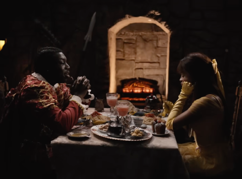
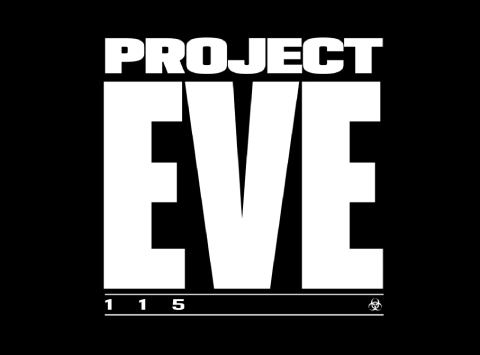
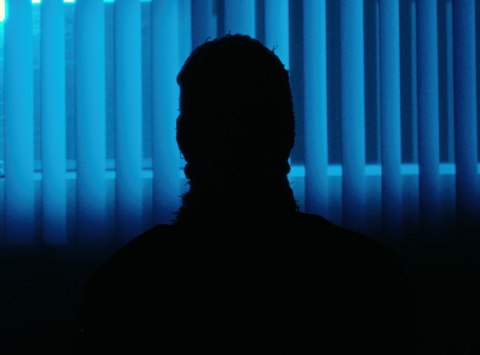
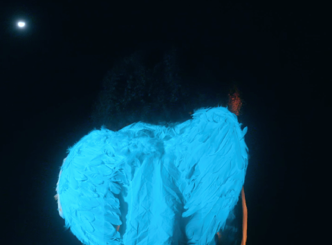

Music Composition
My work as a composer has stretched across many genres. From orchestral scores for some projects to electronic, tense, and eerie scores for others, I have developed a wide range of abilities and compositional styles. However, as a Music Technology major, my emphasis lies with a more synthetic and experimental sound.

For this project, I composed the original score in just under two days as a result of tight deadlines. The music was intended to emulate that of Disney's original Beauty and the Beast, as this was a direct parody. This project promoted an internet dating show by the creator @youngdaboo.

This project was for a senior thesis film by @vhaswings. It called for a much more experimental and synthetic tone. I focused on including eerie sounds and chopping various samples to give the score an off-putting and uncanny feeling.

This score was composed for a short film by @nvtehirsch. I wanted the driving factor of the music to be the ticking sound of the clock, so every other sound was structured around this, giving the music a feeling of high rising tension.

This is another score that I did for @vhaswings. I wanted to pay homage to the nursery rhyme, "Humpty Dumpty" as it relates closely with the offputting plot of this short film. The score utilizes strings and various cello articulations to convey further emotion.